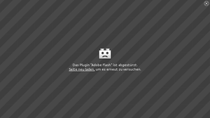

Videoportale mit digitaler Rechteverwaltung
Die Digitale Rechteverwaltung (engl.: Digital Rights Management, kurz DRM) ist ein mittlerweile gängiges Verfahren, um die Nutzung und Verbreitung von gestreamten digitalen Medien zu kontrollieren. Grundsätzlich widerspricht diese Art der Mediennutzung dem Open-Source-Gedanken und der Idee, Inhalte frei verfügbar zu erhalten. Daher ist die Nutzung derartiger Inhalte unter Linux bisher grundsätzlich mit einigen Schwierigkeiten verbunden (und wird kontrovers diskutiert). Dennoch wollen viele Linux-Nutzer, in den Genuss von Filmen, TV-Serien oder Sportübertragungen kommen, die DRM-geschützt sind.
Diese Seite soll einen ersten Überblick verschafften, welche Möglichkeiten für die Nutzung von DRM unter Ubuntu vorhanden sind und bei der Wahl des passenden Lösungsweges eine Entscheidungshilfe bieten.
Alltägliche Probleme¶
 Selbst mit dem grundsätzlichen Wissen, dass Medienanbieter ihre Inhalte mit der Digitalen Rechteverwaltung schützen, ist die konkrete Umsetzung sehr unübersichtlich. So kann es sein, dass die Lieblingsserie von einem auf den nächsten Tag nicht mehr verfügbar ist oder dass bestimmte Inhalte auf einer Seite problemlos abzuspielen, während andere einfach nicht zugänglich sind.
Insbesondere private Fernsehsender stellen in ihren Mediatheken einige Inhalte DRM-frei zur Verfügung, während sie andere schützen. Gerade ganze Folgen von Serien werden oft nur geschützt veröffentlicht, kurze Beiträge sind eher DRM-frei zu beziehen. Pauschalaussagen sind in diesem Kontext also nicht möglich.
In der Regel wird man beim Öffnen eines geschützten Inhalts mit einer Fehlermeldung begrüßt. Im besten Fall mit dem Hinweis, dass der Inhalt DRM-geschützt ist, oft ist aber auch zu lesen, dass der Inhalt über ein mobiles Endgerät nicht zu beziehen ist, oder das Adobe Flash-Plugin stürzt schlicht und einfach ab. Teilweise wird auch klar geschrieben, dass der Inhalt über ein Linux-Betriebssystem nicht zu beziehen ist.
Technische Umsetzung (Desktop-Computer)¶
Aktuell werden in der Regel zwei Browserplugins eingesetzt, um geschützte Medieninhalte zu übertragen:
Silverlight kommt aus dem Hause Micosoft und wird nativ von Linux nicht unterstützt. Adobe Flash setzt – für die Nutzung des DRM-Moduls – unter Linux einen laufenden HAL-Dienst voraus. Diese Schnittstelle wird aber bereits seit Jahren nicht mehr benutzt und nicht mehr weiter entwickelt. Für beide Probleme gibt es allerdings provisorische Lösungen, um beide Techniken mit Ubuntu als Betriebssystem zu nutzen. Näheres dazu im Abschnitt Programme.
Neben diesen beiden etablierten Techniken gibt es auch erste Umsetzungen, DRM-Inhalte über HTML5 an den Nutzer zu bringen. Die Übertragung wird in diesem Fall nicht zwangsläufig über eine Drittanbieter-Anwendung (wie Silverlight oder Adobe Flash) ermöglicht, sondern über eine speziellen Kommunikationskanal – die Encrypted Media Extensions oder kurz EME – verwirklicht.
Bisher bieten Netflix und Amazon Prime Instant Video (Stand: Juli 2015) ihre Inhalte über die EME-Schnittstelle an. Unter Linux ist diese Funktion nur im Browser Google Chrome implementiert (Stand: September 2015). Chrome bietet damit eine vollständig native Unterstützung von DRM-Inhalten unter Linux. Aber auch Mozilla arbeitet an einer indirekten Umsetzung für Firefox als Drittanbieter-Anwendung (ein neues Adobe-Plugin).
Sollte man vorhaben, andere DRM-geschützte Inhalte als die oben genannten in Verbindung mit Google Chrome oder mit einem anderen Browser nutzen zu wollen, stehen folgende Programme zur Verfügung.
Programme¶
Pipelight¶
Das Projekt Pipelight erlaubt es, für Linux nicht verfügbare Windows-spezifische Plugins für Webseiten zu nutzen. Dabei ist das Programm ein echter Allrounder. Unterstützt werden neben Silverlight und Flash noch viele weitere Plugins.
Für das Streamen von Filmen, Serien und Co. kommen zumeist nur Silverlight und Adobe Flash zum Einsatz. Pipelight ermöglicht die Übertragung mittels beider Techniken. Die Umsetzung erfolgt allerdings – wie bereits erwähnt – nicht nativ. Näheres ist dem Artikel selbst zu entnehmen, aber generell gilt es sich vorher zu informieren, welches Plugin eine Seite benötigt und nur das entsprechende zu aktivieren.
Adobe Flash¶
Flash wurde ursprünglich von der Firma Macromedia entwickelt, die zwischenzeitlich von Adobe aufgekauft wurde. Genutzt wird es meist als sog. Flash-Plugin für den Webbrowser. Adobe Flash findet man heutzutage (noch) auf vielen Internetseiten. Sei es als Werbebanner, als Funktion zum Abspielen von Musik oder Videos oder auch als komplette Webseite. Für das Darstellen von DRM-Inhalten, benötigt Flash – bis heute – die veraltete Schnittstelle HAL. Wie diese wieder zu reaktivieren ist, um das DRM-Modul von Flash zu nutzen, kann man in dem Artikel Adobe Flash/DRM nachlesen.
Unterstützt werden nur DRM-Inhalte, die explizit über Flash angeboten werden, dafür aber als natives Plugin für den Browser.
Browserunterstützung¶
Grundsätzlich werden die genannten Plugins von vielen Browsern unterstützt, aber Google Chrome und auch Chromium zählen nicht (mehr) dazu. Beide haben die Unterstützung für NPAPI-Plugins (Netscape Plugin Application Programming Interface) eingestellt, die sowohl für Pipelight als auch das systemweite Flash-Browserplugin erforderlich ist. Beide Browser verwenden (mittlerweile) das PepperFlash-Plugin. Eine DRM-unterstützung ist in diesem Plugin (aktuell) nicht vorhanden.
Hingegen unterstützt aktuell Google Chrome als auch Chromium die Encrypted Media Extensions-Schnittstelle unter Linux. Dadurch kann u.a. der Video-Streaming-Anbieter Netflix und Amamzon Prime Instant Video  unter Linux verwendet werden, da das benötigte DRM umgesetzt wird.
unter Linux verwendet werden, da das benötigte DRM umgesetzt wird.
Auswahlhilfe¶
Letztlich ist die Entscheidung gar nicht so schwer. Wenn man nur auf ein paar Flash-DRM-Inhalte zugreifen will, bietet sich wohl eher Adobe Flash an. Braucht man das Silverligt-Plugin, bleibt ohnehin nur Pipelight. Wenn sowohl Flash als auch Silverlight genutzt werden, sollte man lieber ganz auf Pipelight setzen, statt das eigene System mit beiden Notlösungen zu versorgen. Die Kombination ist aber natürlich möglich.
Beide Lösungen haben ihre Vor- und Nachteile. HAL ist komplett veraltet und Pipelight installiert Windows-Plugins, also Code, der nicht für Linux gedacht ist. Beide Lösungen sind nicht optimal, funktionieren aber meist relativ gut. Falls man ausschließlich an Netflix interessiert ist, bietet sich Google Chrome an.
Hinweis:
Die Tabelle ist nach bestem Wissen und Gewissen erstellt. Im Video-on-demand-Bereich (VoD) können sich die Dinge aber sehr schnell ändern. Falls ein Fehler bemerkt wird: bitte nachbessern.
| Anbieterübersicht für Deutschland | ||
| Anbieter | Plugin | Darstellungsmöglichkeiten |
| Amazon Prime Instant Video | EME, Silverlight, Flash | EME, Pipelight, Adobe Flash, HTML5 (nur Google Chrome) |
| Eurosport Player | Silverlight, Flash | Pipelight, Adobe Flash |
| Google Play-Movies | EME, Flash | EME, Adobe Flash, Pipelight |
| Horizon Go (Achtung: getestet nur für UPC Austria; andere Anbieter, welche ebenfalls die Horizon Go-Plattform verwenden, geben zum Teil abweichende Systemanforderungen an) | Silverlight | Pipelight (User Agent unverändert) |
| MagineTV | Silverlight | Pipelight |
| Maxdome | Silverlight, EME | Pipelight, EME |
| Netflix | EME, Silverlight | EME, Pipelight |
| nowTV (RTLnow, VOXnow, usw.) | Flash | Adobe Flash (Nur Firefox mit libhal), Pipelight |
| ProsiebenSat1 Mediatheken (Sat1, Pro7, Kabel1, usw.) | HTML5, Flash | HTML5, Adobe Flash, Pipelight |
| Sky Go | Silverlight, EME (Google Chrome) | Pipelight, EME |
| Videobuster | Silverlight | Pipelight |
| Videoload | Silverlight | Pipelight |
| Watchever | Silverlight | Pipelight |
Links¶
Intern¶
Streaming
 Grundlegendes zum Thema; Audio- und Videostreams mit Browser-Plugins abspielen
Grundlegendes zum Thema; Audio- und Videostreams mit Browser-Plugins abspielenStreams speichern
Übersichtsartikel
Extern¶
Netflix uneingeschränkt unter Linux
- heise Open Source, 10/2014Encrypted Media Extensions – DRM im Firefox kommt von Adobe
- golem.de, 05/2014DRM and the Challenge of Serving Users
 - Mozilla Blog, 05/2014
- Mozilla Blog, 05/2014
- Erstellt mit Inyoka
-
 2004 – 2017 ubuntuusers.de • Einige Rechte vorbehalten
2004 – 2017 ubuntuusers.de • Einige Rechte vorbehalten
Lizenz • Kontakt • Datenschutz • Impressum • Serverstatus -
Serverhousing gespendet von